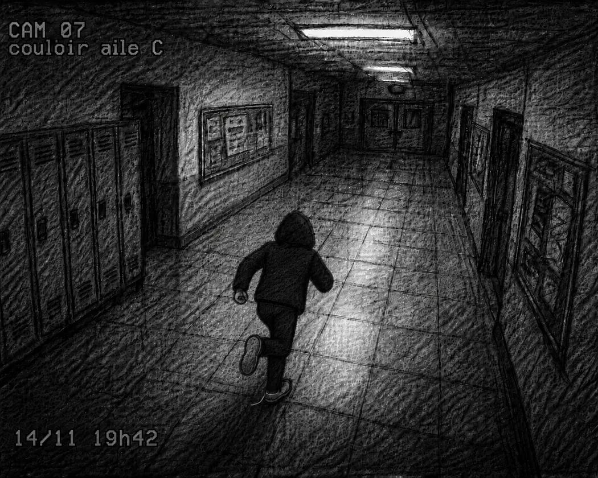

Tu as déjà vu cette image.
Cette fois, prends quelques secondes pour l’observer vraiment.
Quel détail attire ton attention en premier ?Touche l’endroit où ton regard se pose d’abord.

Touche l’endroit qui attire ton regard en premier.
Garde ce détail en tête.Ce n’est pas encore une preuve. Reprends maintenant ta lecture.